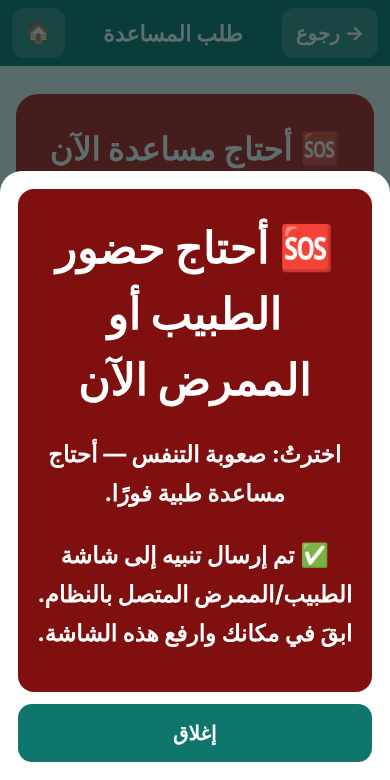

كيف يعمل؟
كل التعليمات مكتوبة. لا مكالمات صوتية ولا أصوات.
خطوات المريض
- اضغط «أنا مريض».
ستجد كل ما تحتاجه لتوضيح حالتك.
- اختر الأعراض بالصور.
اضغط على الصورة المناسبة ثم اختر الشدة.
- حدّد مكان الألم.
اضغط على مكان الألم في صورة الجسم.
- ابدأ المقابلة.
يظهر رمز من 4 أرقام. أعطِه للطبيب أو الممرض.
- وافق على المشاركة إن أردت.
لا يرى الطبيب أعراضك إلا بعد موافقتك.
- اقرأ السؤال وأجب.
اضغط نعم أو لا أو لا أعرف أو أحد الاختيارات.

خطوات الطبيب أو الممرض
- سجّل الدخول.
من «أنا طبيب أو ممرض».
- اكتب رمز المقابلة.
الرمز الظاهر على هاتف المريض، أو اختر من قائمة المقابلات المفتوحة.
- اقرأ ما أبلغ به المريض.
الأعراض وشدتها ومكان الألم ورسائله.
- اسأل.
اختر سؤالًا جاهزًا أو اكتب سؤالًا جديدًا. يظهر فورًا على شاشة المريض.
🆘 عند الطوارئ
زر «أحتاج مساعدة الآن» ظاهر في أسفل كل شاشات المريض. عند الضغط عليه:
- تظهر رسالة حمراء كبيرة تطلب حضور الطبيب أو الممرض، ليُريها المريض لمن حوله.
- إذا كان الهاتف متصلًا بنظام المستشفى، يصل تنبيه مرئي لشاشة الطبيب، ويرى المريض «تم استلام طلبك».
- إذا لم يكن متصلًا، يقول التطبيق ذلك صراحة: «لم يُرسل أي تنبيه».

📶 مع الإنترنت وبدونه
| الميزة | دون اتصال | مع اتصال بنظام المستشفى |
|---|---|---|
| الأعراض والصور ومكان الألم | يعمل | يعمل |
| الأسئلة والجمل المكتوبة | يعمل | يعمل |
| فيديوهات الإشارة | المحفوظة على الهاتف فقط | يعمل |
| الرسائل بين هاتف المريض وهاتف الطبيب | لا يعمل | يعمل |
| تنبيه المساعدة لشاشة الطبيب | لا يُرسل — تظهر رسالة كبيرة فقط | يعمل |
بدون اتصال يمكن للمريض أن يُري شاشته للطبيب، أو يسلّمه الهاتف ليسجّل دخوله ويسأله عليه.